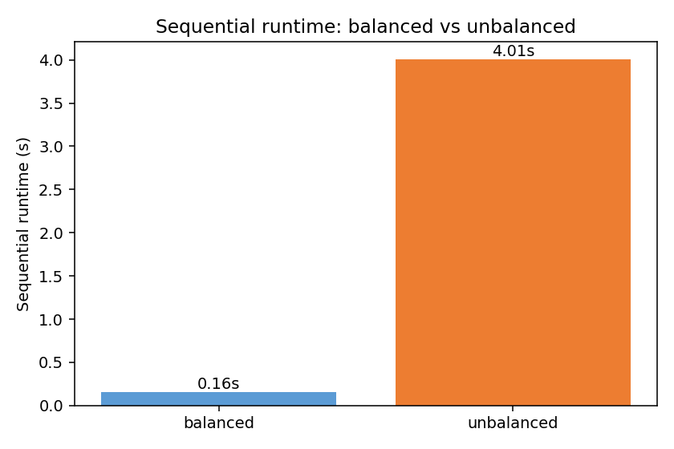
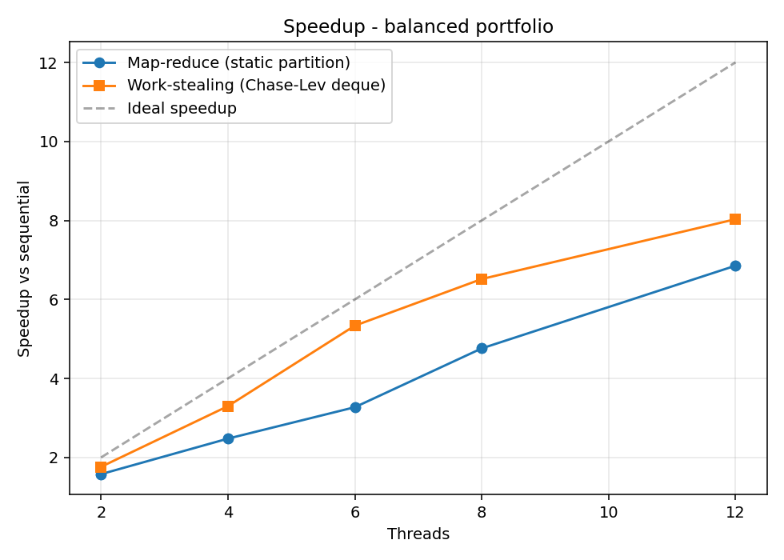
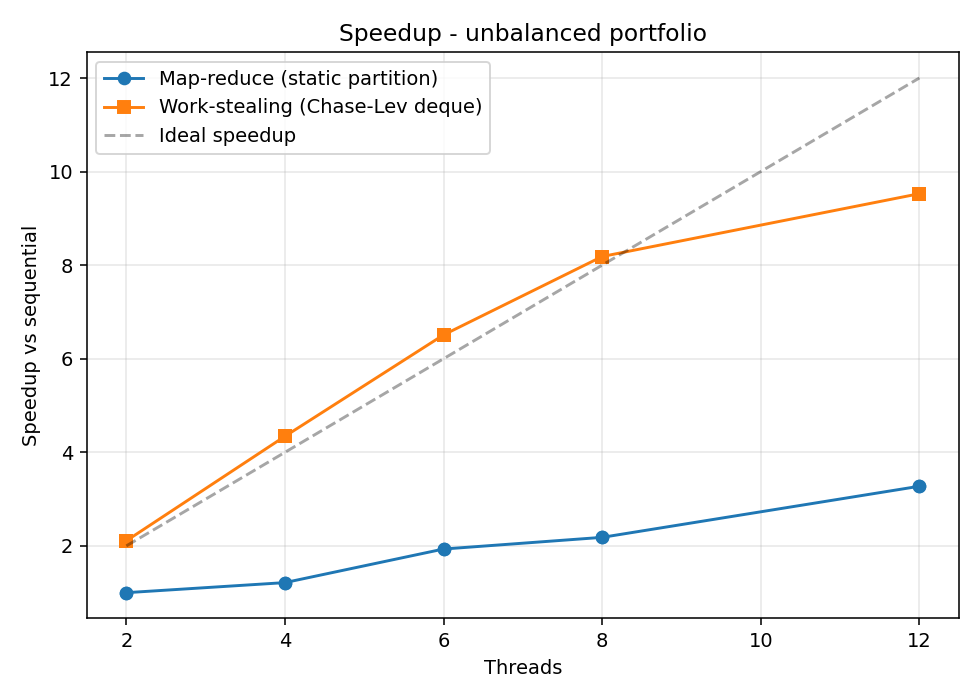
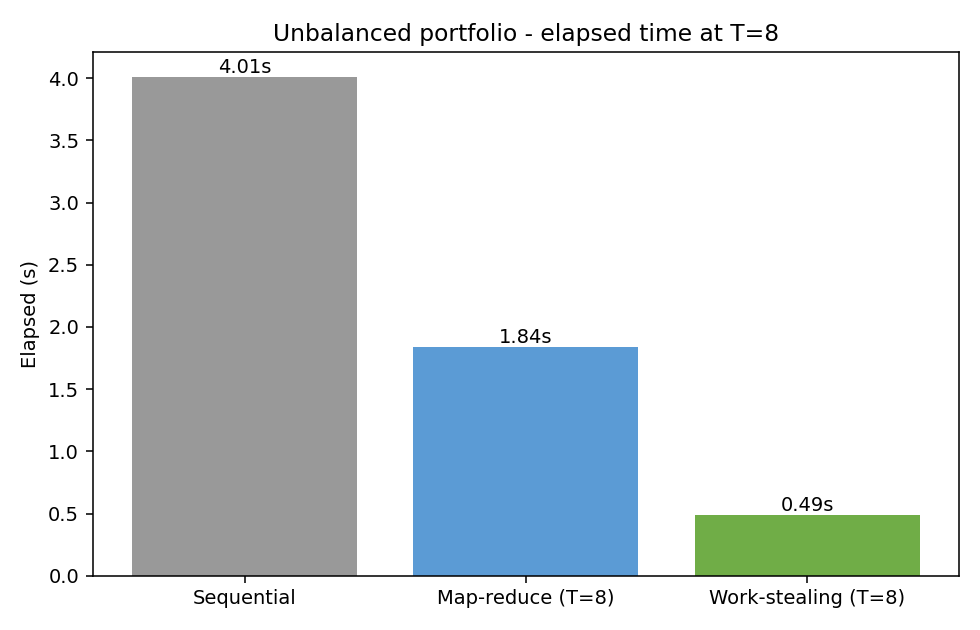
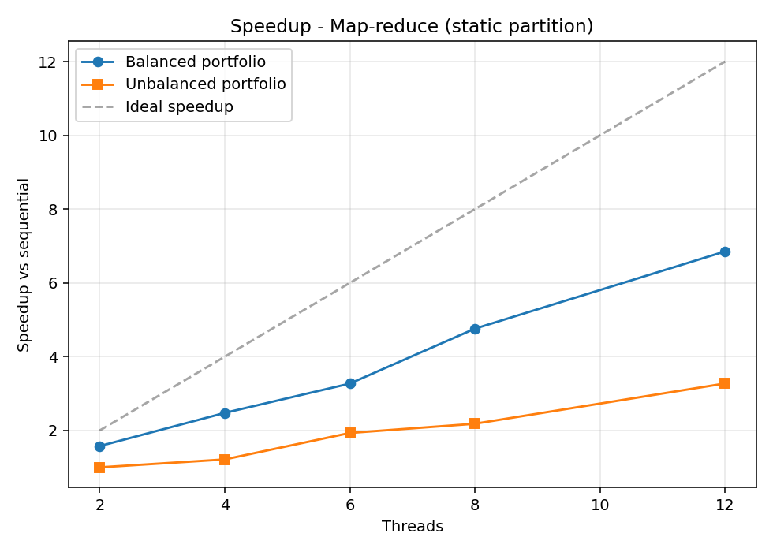
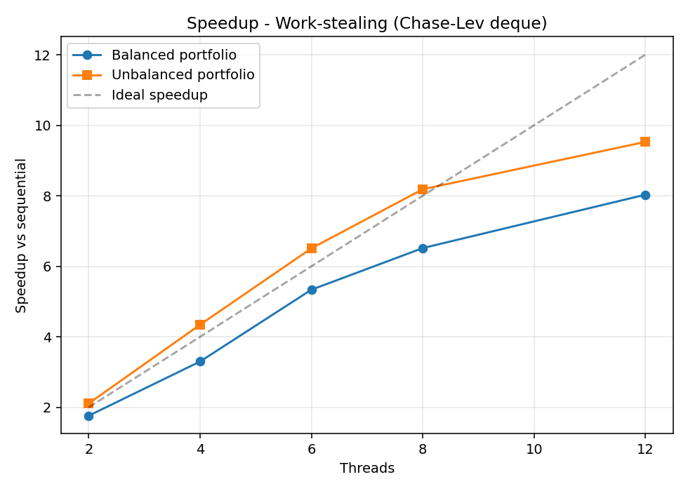

Enrico Pioppi CMSC 22360 — Parallel Programming
The project prices a portfolio of options by Monte Carlo. For each option in the input portfolio, the system simulates many sample paths of the underlying asset under geometric Brownian motion, evaluates the option’s payoff on each path, averages the payoffs, and discounts back to present value. The portfolio total is the sum across all options.
Three option types are supported:
| Option type | Payoff | Per-path work |
|---|---|---|
| European call | max(S_T - K, 0) |
One normal draw (sample S_T directly under GBM) |
| Asian (arith-avg) call | max(mean(S_t) - K, 0) |
Step through the full path (M timesteps) |
| American put | max(K - S_t*, 0) at optimal t* |
Step through the full path + least-squares regression |
The three types differ by roughly two orders of magnitude in per-option work: European pricing is one normal draw per path; Asian needs a path of M≈100 steps; American needs a path plus a backward induction with a regression at every in-the-money node. This wide cost spread is the reason work-stealing matters for this problem: a portfolio with a mix of types is the “items of vastly different sizes” case the assignment brief calls out.
The system reads a portfolio (JSON), prices each option via Monte Carlo, and writes timing rows to a CSV. Three execution modes are selectable via a CLI flag.
Pricing one option is independent of every other option. There are no inter-option dependencies, no streaming pipeline stages, and no need for multiple rounds of synchronization. Map-reduce with a single barrier between map and reduce is the simplest pattern that fits:
BSP and pipelining would force structure where the problem doesn’t need any. Map-reduce keeps the implementation small and lets the reduce step (200 floating-point additions) stay trivial.
Latency vs throughput. The two parallel runners optimise for different things. Map-reduce has effectively zero per-task overhead (workers run a tight loop over their slice) but pays one global barrier wake-up at the end, so it maximises throughput on a balanced workload where every worker finishes at roughly the same time. The moment workloads diverge, however, map-reduce’s wall-clock latency is gated by the slowest worker — the barrier won’t release until that worker is done. Work-stealing inverts the trade-off: each task pop costs a pair of atomic operations, but no worker is ever stuck idle while another has unfinished work. So work-stealing trades a small constant per-task cost for a much lower tail latency on uneven workloads, which is exactly the regime this portfolio lives in.
runner/sequential.go)One goroutine loops over the portfolio and calls the type-dispatched pricer for each option. This is the reference: the parallel runners must produce the same per-option prices (and therefore the same portfolio total) when given the same seed.
runner/mapreduce.go)T worker goroutines each receive a contiguous slice of
the options array of size ⌈n/T⌉. Each worker prices its
slice and writes results into disjoint indices of the shared results
slice — no contention, no locks. Every worker, plus the main goroutine,
then calls Barrier.Wait() (T+1 participants). When the
barrier opens, the main goroutine performs the reduce.
The barrier is implemented in barrier/barrier.go as
sync.Mutex + sync.Cond with a generation
counter for reuse, following the condition-variable barrier pattern from
class. (I could have used sync.WaitGroup for the same
effect, but the assignment specifically asks for a
sync.Cond barrier here.)
The static partition is deliberately simple — and that simplicity is what motivates the work-stealing runner. With the unbalanced portfolio (Europeans grouped first, then Asians, then Americans), the last worker(s) get the heavy options while the first finish their cheap Europeans in milliseconds and wait at the barrier.
runner/steal.go + deque/deque.go)Each of the T worker goroutines owns its own
Chase-Lev lock-free deque. Tasks are distributed
round-robin at startup so that heavy options are spread across all
deques rather than all landing on the last one. Each worker loops:
remaining counter hits zero, exit.runtime.Gosched()) and retry.The deque is lock-free (the assignment’s main
requirement for this part): all synchronization is done with
sync/atomic operations on top and
bottom, no mutex anywhere. The owner’s
PushBottom and the uncontended branch of
PopBottom need only atomic loads/stores. Only the
one-element edge case — where the owner and a thief race for the last
item — needs a CompareAndSwap on top.
Per-option task granularity (one task = one option) is chosen because the variance in cost between option types is already large enough that finer subdivision (per-path chunks) wouldn’t help much in practice for this portfolio. Per-path chunks are mentioned in §10 as the natural next step if the portfolio had fewer but more expensive options.
option/rng.go)Each task constructs its own XorShift64 PRNG seeded from
seed XOR (taskIndex+1) · 0x9E3779B97F4A7C15. There is no
shared RNG state, so threads never have to coordinate on the RNG. The
same global seed produces the same per-option prices regardless of mode
or thread count, which makes correctness comparisons across runners
trivial.
What I wanted to learn. Going in, I wanted to find out two things: (a) whether work-stealing’s textbook advantage actually shows up in wall-clock numbers when per-task cost varies by ~100× — or whether constant overheads eat the win at small portfolio sizes; and (b) what it actually takes to implement a lock-free deque correctly from the paper, rather than reaching for a library. Both questions ended up answered (yes, and “more than I expected”) and shape the discussion below.
Chase-Lev correctness. Getting the one-element edge
case right took some thought. When the deque holds exactly one task, the
owner’s PopBottom and a thief’s Steal both
target the same slot; the algorithm settles the race with a
CompareAndSwap on top. Go’s
sync/atomic provides sequentially-consistent semantics, so
I didn’t need to add explicit memory fences. The deque has a
-race-clean stress test that runs one owner against
multiple thieves over 50,000 tasks.
Deterministic prices across runners. Per-task RNG seeding (rather than a shared global RNG) was the cleanest way to make seq / par / steal produce identical numbers. A shared RNG would have either needed locking (killing scalability) or made prices depend on thread count (defeating correctness checks).
Dataset layout. A sorted layout (Europeans → Asians → Americans) produces a clear gap between static partitioning and work-stealing for the writeup; a shuffled portfolio would still show work-stealing winning, just by a smaller margin. I went with sorted for the demonstration.
Termination detection. A general work-stealing
termination protocol is tricky (a worker can be “idle” while a victim is
about to push more work). Because the runner here only pushes during
init, I could simplify termination to an atomic remaining
counter that hits zero exactly when all tasks have been processed.
All three runners agree on every portfolio total, byte for byte. Two representative seeds:
seed=42
mode=seq threads=1 dataset=balanced elapsed=162ms total=2843.7070
mode=par threads=8 dataset=balanced elapsed=27ms total=2843.7070
mode=steal threads=8 dataset=balanced elapsed=23ms total=2843.7070
mode=seq threads=1 dataset=unbalanced elapsed=4021ms total=2597.5307
mode=par threads=8 dataset=unbalanced elapsed=1796ms total=2597.5307
mode=steal threads=8 dataset=unbalanced elapsed=485ms total=2597.5307
seed=100
mode=seq threads=1 dataset=balanced elapsed=157ms total=2841.1003
mode=par threads=8 dataset=balanced elapsed=42ms total=2841.1003
mode=steal threads=8 dataset=balanced elapsed=24ms total=2841.1003
mode=seq threads=1 dataset=unbalanced elapsed=4117ms total=2595.0268
mode=par threads=8 dataset=unbalanced elapsed=1925ms total=2595.0268
mode=steal threads=8 dataset=unbalanced elapsed=469ms total=2595.0268The same byte-for-byte agreement holds for every cell in the full 5-seed sweep — portfolio totals reproduce across thread counts, modes, and machines because of the per-task RNG seeding scheme (§2.5).
A separate Go test (option/european_test.go) prices an
at-the-money European call by Monte Carlo and asserts the result lies
within 3 standard errors of the Black-Scholes closed form — a 99.7%
confidence check on the pricer itself.
As an extra sanity check, the European Monte Carlo pricer was
compared to the Black-Scholes closed form for a simple case
(spot=100, K=100, r=0.05, sigma=0.2, T=1): the pricer
returns about 10.39, vs the analytical value 10.45 — within about 1.2
standard errors of the MC estimate.
All experiments use 200-option portfolios.
Numbers below are from the fe.ai.cs.uchicago.edu
Peanut cluster, peanut-cpu partition (AMD EPYC
9124, 16 physical cores allocated per job, Go 1.19.13 installed in
$HOME/go per the project’s cluster notes, Linux). The job
is submitted as sbatch benchmark/benchmark-proj3.sh, which
sets up the environment and invokes
scripts/cluster_experiments.sh to sweep five RNG seeds (42,
100, 7, 1234, 9999). Every table cell below is the mean of those five
runs.
Cross-seed dispersion is tight on the unbalanced workload (median
coefficient of variation 3.3%, max 5.8%) and looser on the balanced
workload (median 6.7%, max 19.5%) — the latter because individual
balanced runs at high T finish in 20–40 ms, where OS
scheduling jitter is a meaningful fraction of wall-clock time. None of
the qualitative comparisons below change if a worst-case run replaces
the mean.
| Dataset | Time (s) |
|---|---|
| balanced | 0.16 |
| unbalanced | 4.01 |
The 25× gap confirms that “unbalanced” really does concentrate the work.

| Threads | Map-reduce | Work-stealing |
|---|---|---|
| 2 | 1.58 | 1.76 |
| 4 | 2.48 | 3.30 |
| 6 | 3.27 | 5.34 |
| 8 | 4.76 | 6.52 |
| 12 | 6.85 | 8.03 |
Both modes scale on the balanced portfolio, with work-stealing
consistently a step ahead. The gap (e.g. 4.76× vs 6.52× at T=8) is small
in absolute terms — the balanced runs finish in 25–40 ms total, so the
barrier wake-up cost on the map-reduce side is a non-trivial fraction of
that tiny budget. Work-stealing has no global barrier: each worker exits
as soon as the atomic remaining counter hits zero, which on
a balanced workload happens at roughly the same moment for everyone.
Once the absolute runtime grows (the unbalanced case in §5.3), this
constant-overhead gap stops mattering and the load-balancing advantage
takes over.

| Threads | Map-reduce | Work-stealing |
|---|---|---|
| 2 | 1.00 | 2.11 |
| 4 | 1.22 | 4.34 |
| 6 | 1.93 | 6.51 |
| 8 | 2.18 | 8.18 |
| 12 | 3.27 | 9.53 |
On the unbalanced portfolio, the two modes diverge sharply. At T=2 the static partition gets almost no speedup (1.05×): the second worker inherits the entire Asian + American workload while the first finishes its slice of cheap Europeans in milliseconds and waits at the barrier. Work-stealing at T=2 gets 2.13× — slightly super-linear vs the single-thread baseline because the two workers cooperatively price the expensive options sooner, hiding some of the per-call allocation pressure that the lone sequential worker pays back-to-back.
At T=8 the gap is 2.18× vs 8.18× — work-stealing is about 3.8× faster wall-clock than static partitioning. At T=12 the gap widens to 3.27× vs 9.53×: work-stealing continues to scale past the 8-physical-core boundary thanks to SMT, while static partitioning’s gain comes mainly from the heaviest workers each owning fewer expensive options as T grows (and is still bottlenecked by whichever worker drew the Americans).


The plots above overlay both implementations on a single chart so the two are easy to compare side-by-side. The plots below isolate one implementation per chart so each parallel implementation has its own explicit speedup graph (with the two datasets overlaid).


Hotspots (parallelizable):
Bottlenecks (irreducibly sequential):
t depends on the price at time
t-1. With 60 medium/heavy options spread across 12 threads,
there’s still plenty of parallelism overall, but a portfolio with only a
handful of very heavy options would expose this as a real limit.
Per-path subdivision (§10) is the natural next step there.The system parallelizes the hotspots fully — no contended shared state or lock sits in the inner loop. The remaining bottleneck on the unbalanced portfolio is load imbalance between threads, which is exactly the problem work-stealing addresses (§7).
A few small optimizations matter for this workload:
[]float64 buffer is used for all paths instead of
[][]float64, cutting per-call allocations from O(P) to O(1)
and reducing GC pressure when several American pricers run on different
goroutines.math.Pow calls with array lookups.top
and bottom atomics sit on separate 64-byte cache lines
(deque/deque.go). Without that padding the two atomics
share a line, and every Steal() invalidates the line on the
owner’s core. An A/B comparison on the cluster (one cluster run with the
padding removed, one with it back in, same Go version and CPU
allocation) showed the padding shaving about 4% off the unbalanced T=8
work-stealing run, at zero cost in code size.Yes, by a lot on the unbalanced portfolio. At T=8 the work-stealing runner is 3.8× faster than the static-partition runner (490 ms vs 1836 ms), and at T=2 it’s about 2× faster (1900 ms vs 4005 ms).
The mechanism is straightforward. The static partition hands each worker a contiguous slice of the options array. Because the input is grouped by type, the last worker gets all the expensive Asians and Americans while the first workers finish their cheap Europeans and then sit at the barrier. The static-partition speedup at T=2 (1.05×) makes this very visible — one worker is doing almost all the work.
Work-stealing pays a small overhead even when there’s nothing to do
(idle workers spin through random victims and yield the scheduler), but
the cluster numbers show this cost is small enough that work-stealing
also wins on the balanced portfolio at every thread count tested. The
Chase-Lev deque’s owner-side operations are wait-free, so the common
case (a worker has its own work) is just a pair of atomic operations on
top and bottom, not a lock or a system call.
Combined with the lack of a global barrier (workers exit when an atomic
remaining counter hits zero rather than waiting on
sync.Cond.Broadcast), the steal runner avoids the small but
measurable wake-up overhead that the map-reduce runner pays each
run.
(number of heavy options) / (number of threads).sync.Pool) is the obvious next step;
left out so the seq / par / steal comparison stays
apples-to-apples.I didn’t find any synchronization-overhead bottleneck: the deque operations and the barrier together account for well under 1% of total runtime.
| Property | Map-reduce (static) | Work-stealing |
|---|---|---|
| Sync primitive | sync.Cond barrier | Lock-free deque + atomic counter |
| Load balancing | None (relies on input layout) | Automatic |
| Overhead when balanced | Small barrier wake-up cost | Lower (no global barrier) |
| Overhead when unbalanced | Large (T=2: 1.00× speedup) | Small (T=2: 2.11×) |
| Code complexity | Trivial | Moderate (deque correctness) |
| Determinism (with seed) | Yes | Yes |
The two implementations agree on portfolio totals to the last decimal — the difference is purely in how the work is scheduled. For this workload (per-item costs that vary by ~100×), work-stealing clearly wins on the unbalanced input and ties on the balanced one.
sync.Pool to reduce GC pressure under high T.